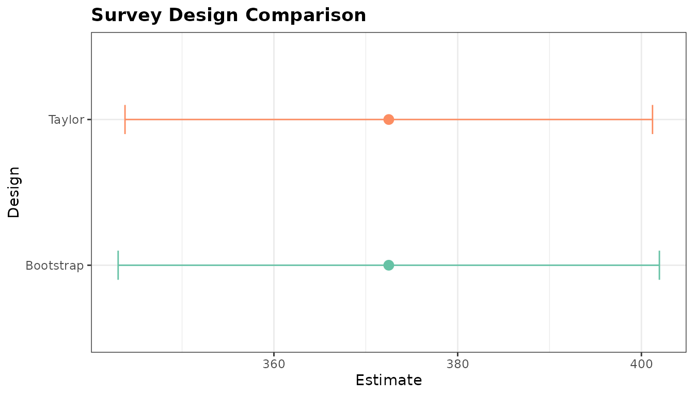

Survey Design Toolbox: Planning, Comparing, and Combining Designs
Source:vignettes/survey-design-toolbox.Rmd
survey-design-toolbox.RmdThis vignette collects three M014 tools into one practitioner-facing workflow:
-
power_creel()for pre-season sample-size and power planning -
compare_designs()for side-by-side comparison of completed survey estimates -
as_hybrid_svydesign()for combining access-point and roving count data in a single survey design
1 Pre-season sample-size planning with
power_creel()
Pre-season planning usually starts with pilot information: expected
effort by stratum, variability in daily counts, and rough
interview-level CV values for catch and effort.
power_creel() provides one interface for three planning
questions.
Required sampling days for total effort precision
This first example estimates how many sampling days are needed in weekday and weekend strata to target a 20% RSE on the seasonal effort estimate.
effort_plan <- power_creel(
mode = "effort_n",
target_rse = 0.20,
strata = c("weekday", "weekend"),
N_h = c(90, 30),
ybar_h = c(42, 68),
s2_h = c(196, 441)
)
effort_plan
#> stratum n_required target_rse
#> 1 weekday 3 0.2
#> 2 weekend 1 0.2
#> 3 total 3 0.2The result returns one row per stratum plus a total row,
making it easy to translate a seasonal precision target into a
day-allocation plan.
Required interviews for CPUE precision
If the planning question is interview effort rather than count days,
mode = "cpue_n" solves for the number of interviews needed
to estimate CPUE with a target RSE.
cpue_plan <- power_creel(
mode = "cpue_n",
target_rse = 0.15,
cv_catch = 0.85,
cv_effort = 0.55,
rho = 0.35
)
cpue_plan
#> n_required target_rse cv_catch cv_effort rho
#> 1 32 0.15 0.85 0.55 0.35This is useful when interview staffing is the main operational bottleneck and pilot data already suggest the variability of catch and angler effort.
Power to detect a management-relevant CPUE change
The third mode asks a different question: if we can complete a fixed number of interviews, how much power do we have to detect a change in CPUE from one season to the next?
power_plan <- power_creel(
mode = "power",
n = 120L,
cv_historical = 0.42,
delta_pct = 0.20
)
power_plan
#> power n delta_pct cv_historical alpha alternative
#> 1 0.9580589 120 0.2 0.42 0.05 two.sidedHere delta_pct = 0.20 means a 20% change in CPUE.
Together, the three modes cover the most common pre-season planning
decisions: how many days to sample, how many interviews to complete, and
what power that design can deliver.
2 Comparing finished designs with
compare_designs()
Once a survey has been completed, compare_designs()
helps compare multiple creel_estimates objects on a common
scale. In this example we estimate total effort twice from the same
dataset, changing only the variance method.
data("example_counts")
data("example_interviews")
calendar <- unique(example_counts[, c("date", "day_type")])
design <- creel_design(calendar, date = date, strata = day_type)
design <- add_counts(design, example_counts)
design <- add_interviews(
design,
example_interviews,
catch = catch_total,
effort = hours_fished,
trip_status = trip_status,
n_anglers = n_anglers
)
set.seed(123)
effort_taylor <- estimate_effort(design, variance = "taylor")
effort_bootstrap <- estimate_effort(design, variance = "bootstrap")
design_comparison <- compare_designs(
list(
Taylor = effort_taylor,
Bootstrap = effort_bootstrap
)
)
design_comparison
#>
#> ── Survey Design Comparison ────────────────────────────────────────────────────
#> 2 row(s), 2 design(s)
#>
#> design estimate se rse ci_lower ci_upper ci_width n
#> 1 Taylor 372 13.2 0.0354 344 401 57.4 14
#> 2 Bootstrap 372 13.5 0.0363 343 402 58.9 14Because both estimates come from the same counts and interviews, the point estimate is identical while the uncertainty metrics reflect the different variance estimators.
ggplot2::autoplot(design_comparison)
#> `height` was translated to `width`.
Design comparison across two effort estimators.
This pattern is helpful after a season when you want to compare alternative estimation choices without rebuilding custom summary tables by hand.
3 Combining access and roving counts with
as_hybrid_svydesign()
Some programs collect counts from both fixed access points and roving
routes. as_hybrid_svydesign() stacks those components into
a single survey design object with component-specific
weights.
access <- data.frame(
date = as.Date(c("2024-06-03", "2024-06-08", "2024-06-10", "2024-06-15")),
day_type = c("weekday", "weekend", "weekday", "weekend"),
count = c(12L, 18L, 9L, 21L)
)
roving <- data.frame(
date = as.Date(c("2024-06-03", "2024-06-08", "2024-06-10", "2024-06-15")),
day_type = c("weekday", "weekend", "weekday", "weekend"),
count = c(10L, 16L, 8L, 19L)
)
hybrid_design <- as_hybrid_svydesign(
access_data = access,
roving_data = roving,
access_fraction = c(weekday = 0.5, weekend = 0.5),
roving_fraction = c(weekday = 0.5, weekend = 0.5)
)
hybrid_design
#>
#> ── Hybrid Creel Survey Design ──────────────────────────────────────────────────
#> Components: "access" (4 obs) + "roving" (4 obs)
#>
#> Stratified Independent Sampling design
#> survey::svydesign(ids = ids_formula, strata = strata_formula,
#> weights = weights_formula, fpc = ~fpc_val, data = combined)With the combined design in hand, standard survey
estimators work directly on the stacked data.
survey::svytotal(~count, hybrid_design)
#> total SE
#> count 226 7.6158This small example is intentionally self-contained, but the same pattern scales to real field programs where access and roving counts represent complementary views of the same sampling frame.
Summary
The survey-design toolbox supports the full planning-to-reporting arc:
-
power_creel()helps set realistic pre-season sample sizes and power targets -
compare_designs()turns alternative estimator outputs into a tidy, directly comparable object with a plotting method -
as_hybrid_svydesign()bridges mixed access-point and roving count programs into one survey design for downstream analysis
Used together, these tools make it easier to justify sampling effort before the season, evaluate estimator trade-offs afterward, and support hybrid monitoring programs with standard survey workflows.